Machine Learning Ph.D. student, UT Austin
I am a Ph.D. student at The University of Texas at Austin in the Department of ECE, advised by the wonderful Prof. Joydeep Ghosh (previously Prof. Edison Thomaz), and affiliated with IDEAL, WNCG, IFML, and iMAGiNE. My research focuses on efficient and data-centric machine learning, foundation models, and human-centered multimodal and multisensory AI, with applications to personal health.
Previously, I was a research intern at Bosch Research (BCAI, California) on language models for multimodal time-series understanding and at Nokia Bell Labs (Cambridge, UK) on test-time adaptation of health foundation models. Before my Ph.D., I worked at Ericsson R&D on AI/ML for next-generation telecom systems and at SmartCardia, an EPFL spin-off, on AI-driven wearable healthcare.
Here are a few keywords reflecting my past and current research.
* denotes equal contribution and joint lead authorship
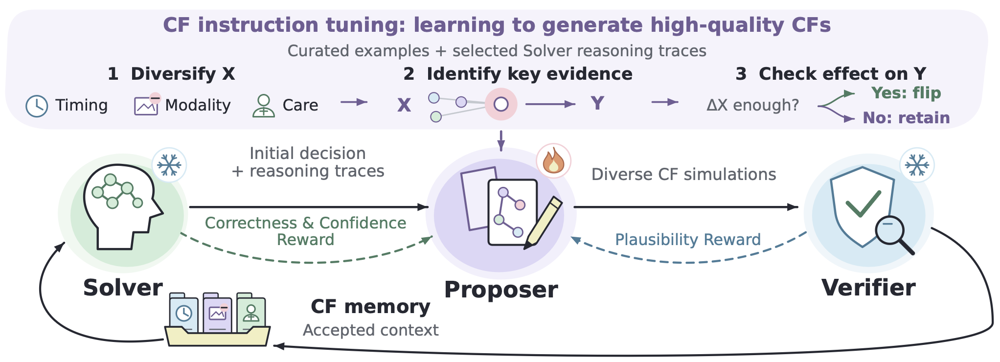 |
NEW
Counterfactual Self-Evolving Agents for Evidence-Grounded Reasoning
pdf /
abstract /
bibtex
Self-play proposer-solver methods improve reasoning by generating tasks and learning from verified solutions. However, for evidence-identifiable tasks, where case-specific evidence and domain knowledge determine a checkable answer, self-play requires generating plausible cases whose answers can be independently verified. We introduce counterfactual self-evolution, which generates counterfactual context for reconsidering the original case. A trainable Proposer constructs targeted evidence edits and describes potential outcome changes with causal explanations. We handcraft an expert-verified counterfactual instruction-tuning dataset to teach the Proposer to generate high-quality counterfactuals across a broad range of action-outcome scenarios. Each counterfactual instruction-tuning example specifies an edit within a defined category and explains its hypothesized causal effect on the decision, teaching the Proposer to reason systematically about what changes and why. We instruction-tune the Proposer on these examples, then formulate a fine-tuning reward that integrates feedback from the Solver and Verifier. Across diverse counterfactual scenarios, this reward favors high-quality counterf actuals and warranted revisions, while penalizing changes that overturn correct decisions. The counterf actual context aims to correct errors and strengthen confidence in correct decisions. Accepted counterf actuals accumulate in memory that supplies in-context evidence to the frozen Solver; the Solver adapts through evolving context rather than weight updates. We apply the framework to clinical reasoning, fact verification, and business reasoning. Our evaluation tracks performance over successive rounds as counterf actual memory grows, including transfer to harder cases. Our method achieves superior results across diverse frontier models. @article{han_evoagent26,
title = {Counterfactual Self-Evolving Agents
for Evidence-Grounded Reasoning},
author = {Han, Xing and Wang, Yuxin and
Chen, Chen and Dai, Wei and Gudur, Gautham
Krishna and Li, Shijun and Chung, Hsing-Huan
and Hager, Gregory D. and Ghosh, Joydeep and
Liang, Paul Pu and Saria, Suchi},
year = {2026},
eprint = {2609.32870},
archivePrefix = {arXiv}
}
|
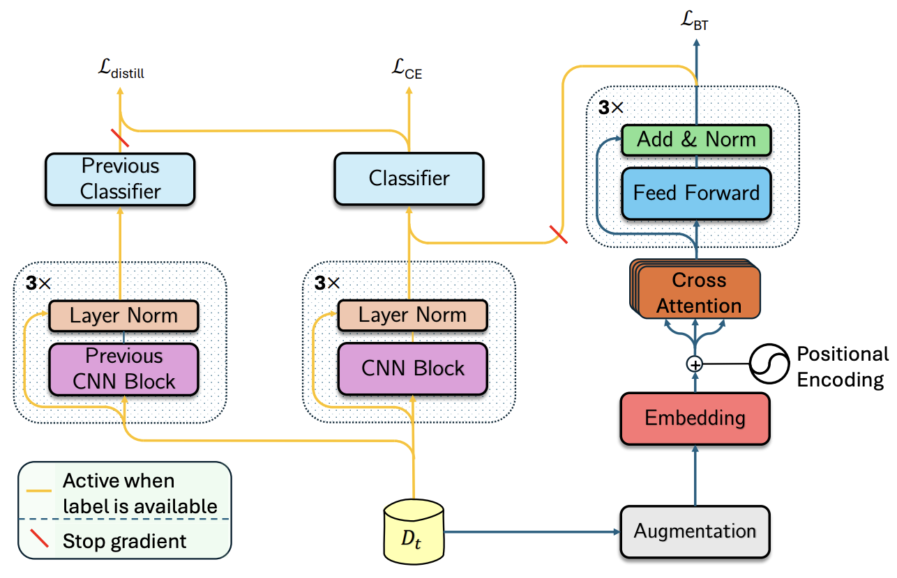 |
CLAD-Net: Continual Activity Recognition in Multi-Sensor Wearable Systems
pdf /
abstract /
bibtex
The rise of deep learning has greatly advanced human behavior monitoring using wearable sensors, particularly human activity recognition (HAR). While deep models have been widely studied, most assume stationary data distributions - an assumption often violated in real-world scenarios. For example, sensor data from one subject may differ significantly from another, leading to distribution shifts. In continual learning, this shift is framed as a sequence of tasks, each corresponding to a new subject. Such settings suffer from catastrophic forgetting, where prior knowledge deteriorates as new tasks are learned. This challenge is compounded by the scarcity and inconsistency of labeled data in human studies. To address these issues, we propose CLAD-Net (Continual Learning with Attention and Distillation), a framework enabling wearable-sensor models to be updated continuously without sacrificing performance on past tasks. CLAD-Net integrates a self-supervised transformer, acting as long-term memory, with a supervised Convolutional Neural Network (CNN) trained via knowledge distillation for activity classification. The transformer captures global activity patterns through cross-attention across body-mounted sensors, learning generalizable representations without labels. Meanwhile, the CNN leverages knowledge distillation to retain prior knowledge during subject-wise fine-tuning. On PAMAP2, CLAD-Net achieves 91.36% final accuracy with only 8.78% forgetting, surpassing memory-based and regularization-based baselines such as Experience Replay and Elastic Weight Consolidation. In semi-supervised settings with only 10-20% labeled data, CLAD-Net still delivers strong performance, demonstrating robustness to label scarcity. Ablation studies further validate each module's contribution. @article{azghan_cladnet25,
title = {CLAD-Net: Continual Activity
Recognition in Multi-Sensor Wearable Systems},
author = {Azghan, Reza Rahimi and Gudur,
Gautham Krishna and Malu, Mohit and Thomaz,
Edison and Pedrielli, Giulia and Turaga, Pavan
and Ghasemzadeh, Hassan},
year = {2025},
eprint = {2509.23077},
archivePrefix = {arXiv}
}
|
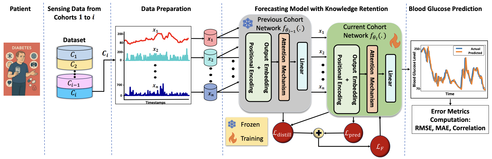 |
GluMind: Multimodal Parallel Attention and Knowledge Retention for Robust Cross-Population Blood Glucose Forecasting
pdf /
abstract /
bibtex
Diabetes is a chronic metabolic disorder characterized by persistently high blood glucose levels (BGLs), leading to severe complications such as cardiovascular disease, neuropathy, and retinopathy. Predicting BGLs enables patients to maintain glucose levels within a safe range and allows caregivers to take proactive measures through lifestyle modifications. Continuous Glucose Monitoring (CGM) systems provide real-time tracking, offering a valuable tool for monitoring BGLs. However, accurately forecasting BGLs remains challenging due to fluctuations due to physical activity, diet, and other factors. Recent deep learning models show promise in improving BGL prediction. Nonetheless, forecasting BGLs accurately from multimodal, irregularly sampled data over long prediction horizons remains a challenging research problem. In this paper, we propose AttenGluco, a multimodal Transformer-based framework for long-term blood glucose prediction. AttenGluco employs cross-attention to effectively integrate CGM and activity data, addressing challenges in fusing data with different sampling rates. Moreover, it employs multi-scale attention to capture long-term dependencies in temporal data, enhancing forecasting accuracy. To evaluate the performance of AttenGluco, we conduct forecasting experiments on the recently released AIREADI dataset, analyzing its predictive accuracy across different subject cohorts including healthy individuals, people with prediabetes, and those with type 2 diabetes. Furthermore, we investigate its performance improvements and forgetting behavior as new cohorts are introduced. Our evaluations show that AttenGluco improves all error metrics, such as root mean square error (RMSE), mean absolute error (MAE), and correlation, compared to the multimodal LSTM model. AttenGluco outperforms this baseline model by about 10% and 15% in terms of RMSE and MAE, respectively.This paper proposes GluMind, a transformer-based multimodal framework designed for continual and long-term blood glucose forecasting. GluMind devises two attention mechanisms, including cross-attention and multi-scale attention, which operate in parallel and deliver accurate predictive performance. Cross-attention effectively integrates blood glucose data with other physiological and behavioral signals such as activity, stress, and heart rate, addressing challenges associated with varying sampling rates and their adverse impacts on robust prediction. Moreover, the multi-scale attention mechanism captures long-range temporal dependencies. To mitigate catastrophic forgetting, GluMind incorporates a knowledge retention technique into the transformer-based forecasting model. The knowledge retention module not only enhances the model's ability to retain prior knowledge but also boosts its overall forecasting performance. We evaluate GluMind on the recently released AIREADI dataset, which contains behavioral and physiological data collected from healthy people, individuals with prediabetes, and those with type 2 diabetes. We examine the performance stability and adaptability of GluMind in learning continuously as new patient cohorts are introduced. Experimental results show that GluMind consistently outperforms other state-of-the-art forecasting models, achieving approximately 15% and 9% improvements in root mean squared error (RMSE) and mean absolute error (MAE), respectively. @article{farahmand_glumind25,
title = {GluMind: Multimodal Parallel Attention
and Knowledge Retention for Robust
Cross-Population Blood Glucose Forecasting},
author = {Farahmand, Ebrahim and Azghan,
Reza Rahimi and Chatrudi, Nooshin Taheri and
Ansu-Baidoo, Velarie Yaa and Kim, Eric and
Gudur, Gautham Krishna and Malu, Mohit and
Krueger, Owen and Thomaz, Edison and
Pedrielli, Giulia and Turaga, Pavan and
Ghasemzadeh, Hassan},
year = {2025},
eprint = {2509.18457},
archivePrefix = {arXiv}
}
|
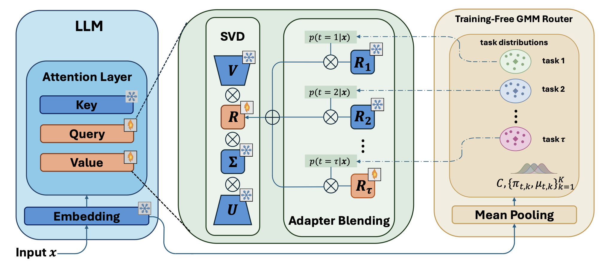 |
NEW
Latent-LoRA: Compact Latent-Space Adapters with Gradient-Free Routing for Continual Learning
pdf /
abstract /
bibtex
Large language models generalize well to individual tasks but lack an inherent mechanism for learning them sequentially, leading to catastrophic forgetting. To mitigate this, LoRA-based continual learning methods allocate a separate low-rank adapter per task, yet existing approaches either require task identity at inference or sum all adapters indiscriminately, letting irrelevant branches distort the output. Recent gating-based solutions route inputs to the correct adapter but introduce trainable parameters that themselves need protection against forgetting. In this work, we observe that pooled token embeddings from a frozen LLM embedding layer already separate task distributions throughout the learning sequence. A Gaussian mixture model fitted on these embeddings, without any gradient-based training, is sufficient for task-agnostic adapter selection at test time. This eliminates the need for a learned gating module. On the adapter side, constraining each task’s parameters to the principal subspace of the pretrained weights via SVD yields a compact latent-space parameterization. Within this subspace, orthogonal regularization directly controls inter-task interference. The resulting system, Latent-LoRA, is replay-free, requires no trainable routing component, and uses substantially fewer parameters per task. Experiments across five model scales and two established continual learning benchmarks show state-of-the-art performance with near-zero forgetting. @article{azghan_latentlora26,
title = {Latent-LoRA: Compact Latent-Space
Adapters with Gradient-Free Routing for
Continual Learning},
author = {Azghan, Reza Rahimi and Gudur,
Gautham Krishna and Pedrielli, Giulia
and Turaga, Pavan and Ghasemzadeh, Hassan},
year = {2026},
eprint = {2607.23837},
archivePrefix = {arXiv},
}
|
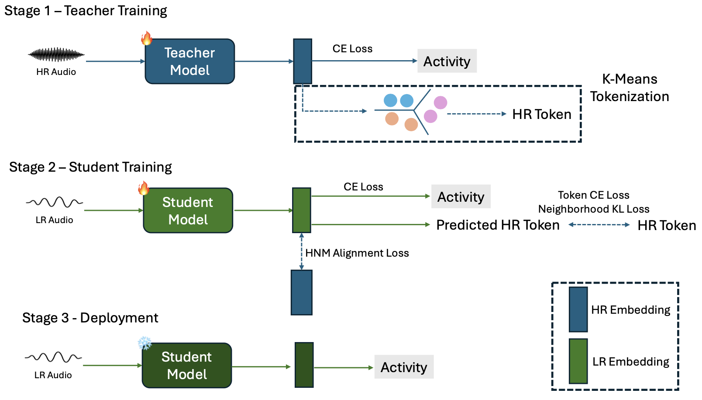 |
NEW
RAST: Resolution-Aware Privileged Structure Transfer for Low-Resolution Audio Activity Recognition
pdf /
abstract /
bibtex
Audio is increasingly used for human activity recognition (HAR) because it captures object interactions, environmental events, and contextual cues in everyday environments. Highresolution (HR) audio provides rich acoustic information for model development but incurs substantial energy and storage costs and may expose sensitive speech content. Lowresolution (LR) audio offers a more privacy-preserving and resource-efficient alternative for deployment, but reduced sampling rates can remove acoustic cues essential for activity recognition, leading to significant performance degradation. We formulate this training–deployment mismatch as sensor-resolution privileged learning, in which HR audio is available during training, while inference relies exclusively on LR audio. We propose RAST, a resolution-aware transfer framework that compresses HR teacher representations by preserving token-level information and neighborhood structure before performing localized HR–LR alignment. Experiments on the SAMoSA and AudioIMU datasets show that RAST consistently outperforms LR-only training and direct teacher-transfer baselines, improving LR-only recognition by up to ∼7.8% while requiring only LR audio at inference. @inproceedings{park_rast26,
title = {RAST: Resolution-Aware Privileged
Structure Transfer for Low-Resolution Audio
Activity Recognition},
author = {Park, Ji Hwan, and Gudur, Gautham
Krishna and Shen, Yufei and Liang, Dawei and
Thomaz, Edison}
booktitle = {Proceedings of the 4th
International Workshop on Human-Centered
Sensing, Modeling, and Intelligent Systems},
pages = {159–164},
numpages = {6},
year = {2026},
doi = {10.1145/3842436.3843818}
}
|
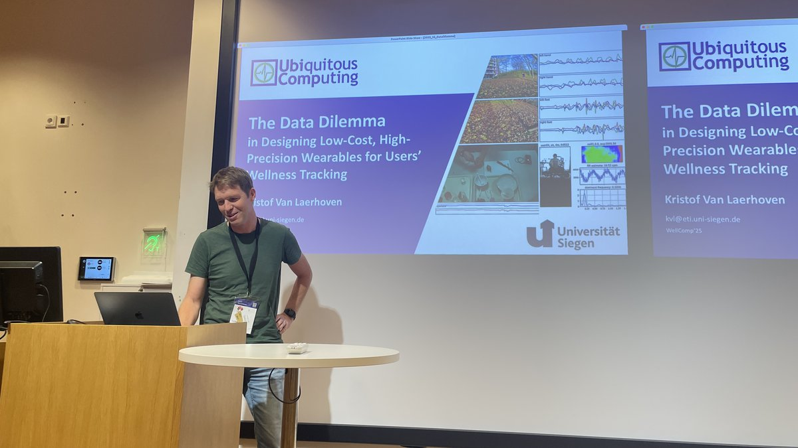 |
NEW
WellComp 2026: Ninth International Workshop on Computing and Software Systems for Well-Being
abstract /
bibtex
With continued advances in ubiquitous computing, software engineering, and AI-driven service and sensing systems, ubicomp technology has become deeply embedded in everyday life, shaping office work, domestic environments, health management, transportation, and broader urban living ecosystems. Beyond the traditional computing-centric objectives of "efficiency" and "productivity", recent years have seen growing emphasis on how such technologies can more directly support human well-being. In the ninth "WellComp" (Computing for Well-being) workshop, we aim to foster an intensive and interdisciplinary discussion on how ubiquitous computing and software engineering can advance user well-being across multiple dimensions, including physical, mental, and social wellness, as well as their intersections across multiple layers of computing. Building on the strong success of the previous eight workshops, and supported by an internationally recognized organizing committee spanning diverse ubicomp research domains, WellComp 2026 will bring together researchers and practitioners from academia and industry to explore a broad spectrum of topics at the intersection of well-being and ubiquitous computing. @inproceedings{gudur_wellcomp26,
title = {WellComp 2026: Ninth International
Workshop on Computing and Software Systems
for Well-Being},
author = {Gudur, Gautham Krishna and Yoon,
Hyungjun and Wu, Yu Yvonne and Xia, Tong
and Jia, Hong}
booktitle = {Companion of the 2026 ACM
International Joint Conference on Pervasive
and Ubiquitous Computing
(UbiComp Companion ’26)},
numpages = {4},
year = {2026},
doi = {10.1145/3798063.3839769}
}
|
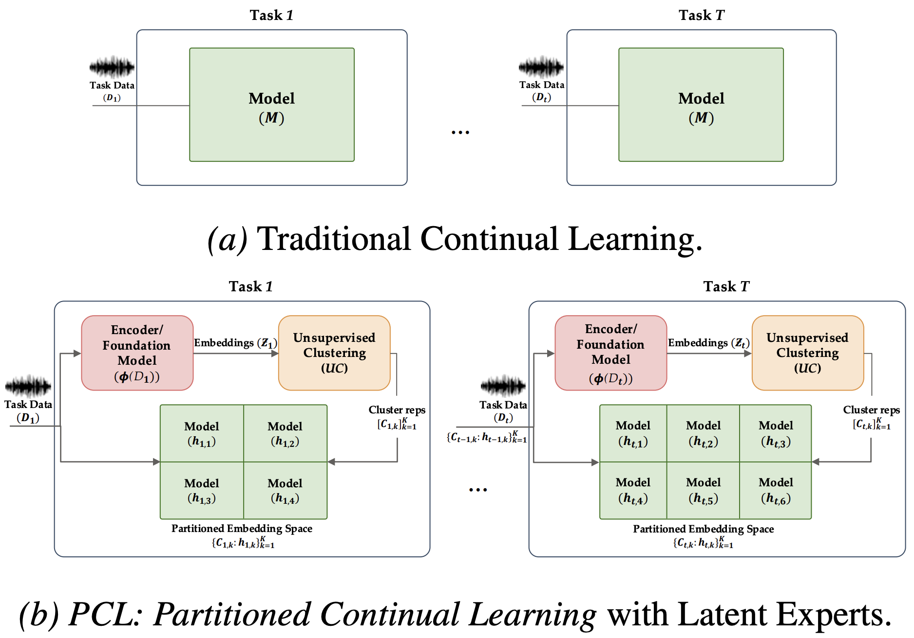 |
PCL: Partitioned Continual Learning via Unsupervised Latent Experts for Audio Classification
pdf /
abstract /
poster /
linkedin /
bibtex
Continual audio classification requires models to learn new sound classes over time without retraining while preserving performance on previously learned classes, balancing plasticity and stability. Existing continual learning (CL) approaches update a single shared monolithic model across tasks, limiting scalability to evolving task distributions and constraining adaptation to the input space. We propose PCL, a representation-space framework that replaces a monolithic model with multiple lightweight experts. Embeddings from pretrained audio foundation models are partitioned via unsupervised clustering, where each homogeneous latent region is assigned an expert. Experiments on ESC-50 and UrbanSound8K using CLAP, AST, and Wav2Vec2 embeddings in exemplar-free class-incremental settings show consistent improvements over monolithic baselines, including a ~17% accuracy gain and a Backward Transfer (BWT) improvement from -0.249 to -0.061 on ESC-50 with minimal overhead. @article{gudur_pcl26,
title = {PCL: Partitioned Continual Learning
via Unsupervised Latent Experts for Audio
Classification},
author = {Gudur, Gautham Krishna and Malu, Mohit
and Khandait, Tanmay and Azghan, Reza Rahimi and
Rayas, Anirudh and Turaga, Pavan and
Ghosh, Joydeep and Ghasemzadeh, Hassan
and Thomaz, Edison and Pedrielli, Giulia}
journal = {ICML 2026 Workshop on
Learning to Listen: Machine Learning for Audio},
year = {2026}
}
|
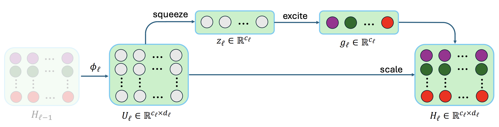 |
Gated Adaptation for Continual Learning in Human Activity Recognition
pdf /
abstract /
bibtex
Wearable sensors in Internet of Things (IoT) ecosystems increasingly support applications such as remote health monitoring, elderly care, and smart home automation, all of which rely on robust human activity recognition (HAR). Continual learning systems must balance plasticity (the ability to learn new tasks) with stability (the retention of previously acquired knowledge). However, AI models often exhibit catastrophic forgetting, where learning new tasks degrades performance on earlier ones. This challenge is particularly acute in domain-incremental settings such as HAR, where on-device models must adapt to new subjects with distinct movement characteristics while maintaining accuracy on previously seen subjects without transmitting sensitive data to the cloud. In this work, we propose a parameter-efficient continual learning framework based on channel-wise gated modulation applied to frozen pretrained representations. Our key insight is that adaptation should operate through feature selection rather than feature generation: by restricting learned transformations to diagonal scaling of existing features, we preserve the geometric structure of pretrained representations while enabling subject-specific modulation. We provide a theoretical analysis showing that gating implements a bounded diagonal operator that limits representational drift compared to unconstrained linear transformations. Empirically, we demonstrate that freezing the backbone substantially reduces forgetting and that lightweight gates restore the adaptation capacity lost from freezing, achieving both stability and plasticity simultaneously. On the PAMAP2 dataset with 8 sequential subjects, our approach reduces forgetting from 39.7% (trainable backbone) to 16.2% and improves final accuracy from 56.7% to 77.7%, while training less than 2% of model parameters. Our method matches or exceeds standard continual learning baselines without requiring replay buffers or task-specific regularization, confirming that structured diagonal operators provide an effective and efficient mechanism for continual learning under distribution shift. @article{azghan_gatedcl26,
title = {Gated Adaptation for Continual Learning
in Human Activity Recognition},
author = {Azghan, Reza Rahimi and Gudur,
Gautham Krishna and Malu, Mohit and Thomaz,
Edison and Pedrielli, Giulia and Turaga, Pavan
and Ghasemzadeh, Hassan},
journal={IEEE Internet of Things Journal},
volume = {13},
number = {19},
pages = {45304-45318},
year = {2026},
doi = {10.1109/JIOT.2026.3717877}
}
|
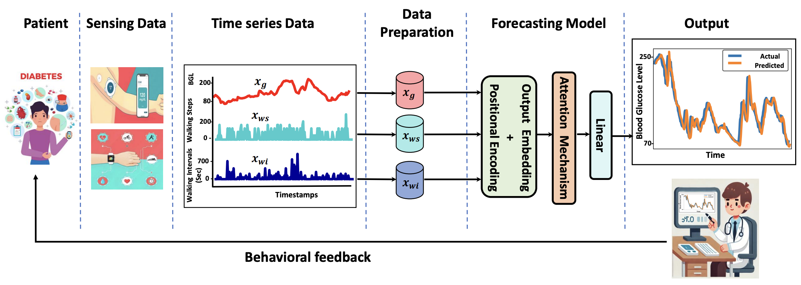 |
AttenGluco: Multimodal Transformer-Based Blood Glucose Forecasting on AI-READI Dataset
pdf /
abstract /
code /
bibtex
Diabetes is a chronic metabolic disorder characterized by persistently high blood glucose levels (BGLs), leading to severe complications such as cardiovascular disease, neuropathy, and retinopathy. Predicting BGLs enables patients to maintain glucose levels within a safe range and allows caregivers to take proactive measures through lifestyle modifications. Continuous Glucose Monitoring (CGM) systems provide real-time tracking, offering a valuable tool for monitoring BGLs. However, accurately forecasting BGLs remains challenging due to fluctuations due to physical activity, diet, and other factors. Recent deep learning models show promise in improving BGL prediction. Nonetheless, forecasting BGLs accurately from multimodal, irregularly sampled data over long prediction horizons remains a challenging research problem. In this paper, we propose AttenGluco, a multimodal Transformer-based framework for long-term blood glucose prediction. AttenGluco employs cross-attention to effectively integrate CGM and activity data, addressing challenges in fusing data with different sampling rates. Moreover, it employs multi-scale attention to capture long-term dependencies in temporal data, enhancing forecasting accuracy. To evaluate the performance of AttenGluco, we conduct forecasting experiments on the recently released AIREADI dataset, analyzing its predictive accuracy across different subject cohorts including healthy individuals, people with prediabetes, and those with type 2 diabetes. Furthermore, we investigate its performance improvements and forgetting behavior as new cohorts are introduced. Our evaluations show that AttenGluco improves all error metrics, such as root mean square error (RMSE), mean absolute error (MAE), and correlation, compared to the multimodal LSTM model. AttenGluco outperforms this baseline model by about 10% and 15% in terms of RMSE and MAE, respectively. @inproceedings{farahmand_attengluco25,
title = {AttenGluco: Multimodal Transformer-Based
Blood Glucose Forecasting on AI-READI Dataset},
author = {Farahmand, Ebrahim and Azghan,
Reza Rahimi and Chatrudi, Nooshin Taheri,
and Kim, Eric and Gudur, Gautham Krishna
and Thomaz, Edison and Pedrielli, Giulia
and Turaga, Pavan and Ghasemzadeh, Hassan}
booktitle = {2025 47th Annual International
Conference of the IEEE Engineering in Medicine
and Biology Society (EMBC)},
pages = {1-7},
year = {2025},
organization = {IEEE}
}
|
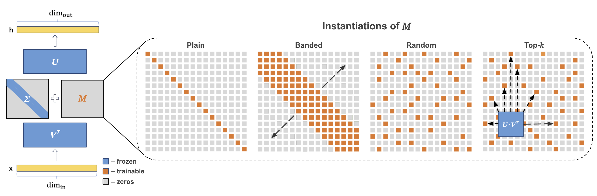 |
SVFT: Parameter-Efficient Fine-Tuning with Singular Vectors
pdf /
abstract /
poster /
code /
tweet /
bibtex
Popular parameter-efficient fine-tuning (PEFT) methods, such as LoRA and its variants, freeze pre-trained model weights W and inject learnable matrices ∆W. These ∆W matrices are structured for efficient parameterization, often using techniques like low-rank approximations or scaling vectors. However, these methods typically exhibit a performance gap compared to full fine-tuning. While recent PEFT methods have narrowed this gap, they do so at the expense of additional learnable parameters. We propose SVFT, a simple approach that structures ∆W based on the specific weight matrix W. SVFT updates W as a sparse combination M of outer products of its singular vectors, training only the coefficients of these combinations. Crucially, we make additional off-diagonal elements in M learnable, enabling a smooth trade-off between trainable parameters and expressivity — an aspect that distinctly sets our approach apart from previous works leveraging singular values. Extensive experiments on language and vision benchmarks show that SVFT recovers up to 96% of full fine-tuning performance while training only 0.006 to 0.25% of parameters, outperforming existing methods that achieve only up to 85% performance with 0.03 to 0.8% of the trainable parameter budget. @inproceedings{lingam_neurips24,
title = {SVFT: Parameter-Efficient Fine-Tuning
with Singular Vectors},
author = {Lingam, Vijay and Tejaswi, Atula
and Vavre, Aditya and Shetty, Aneesh
and Gudur, Gautham Krishna and Ghosh, Joydeep
and Dimakis, Alex and Choi, Eunsol and
Bojchevski, Aleksandar and Sanghavi, Sujay},
pages = {41425--41446},
booktitle = {Advances in Neural Information
Processing Systems},
year = {2024}
}
|
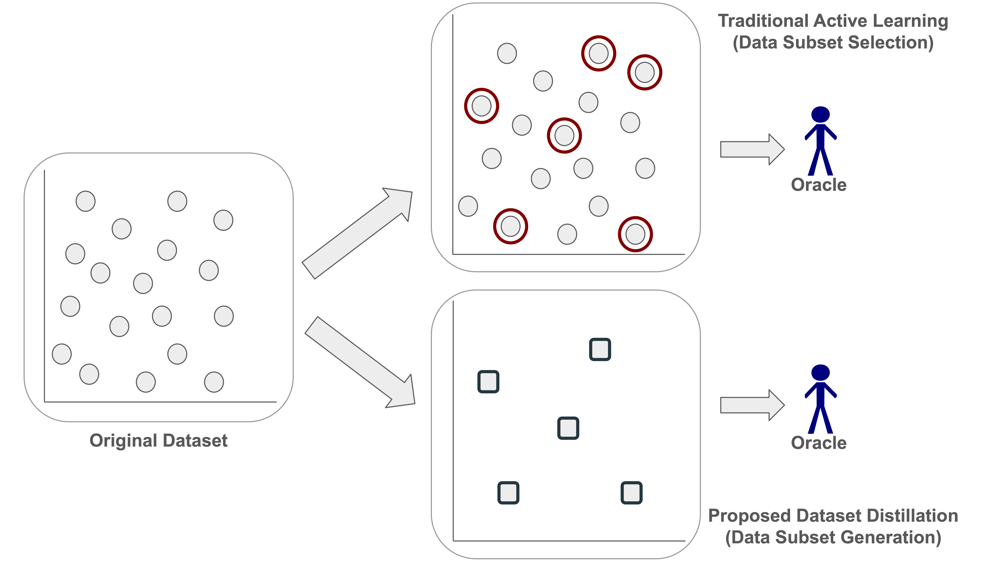 |
Dataset Distillation for Audio Classification: A Data-Efficient Alternative to Active Learning
pdf /
abstract /
poster /
bibtex
Audio classification tasks like keyword spotting and acoustic event detection often require large labeled datasets, which are computationally expensive and impractical for resource-constrained devices. While active learning techniques attempt to reduce labeling efforts by selecting the most informative samples, they struggle with scalability in real-world scenarios involving thousands of audio segments. In this paper, we introduce an approach that leverages dataset distillation as an alternative strategy to active learning to address the challenge of data efficiency in real-world audio classification tasks. Our approach synthesizes compact, high-fidelity coresets that encapsulate the most critical information from the original dataset, significantly reducing the labeling requirements while offering competitive performance. Through experiments on three benchmark datasets -- Google Speech Commands, UrbanSound8K, and ESC-50, our approach achieves up to a ~3,000x reduction in data points, and requires only a negligible fraction of the original training data while matching the performance of popular active learning baselines. @article{gudur_enlsp24,
author = {Gudur, Gautham Krishna and
Thomaz, Edison},
title = {Dataset Distillation for Audio
Classification: A Data-Efficient
Alternative to Active Learning},
journal = {NeurIPS 2024 Efficient
Natural Language and Speech Processing
(ENLSP-IV) Workshop},
year = {2024}
}
|
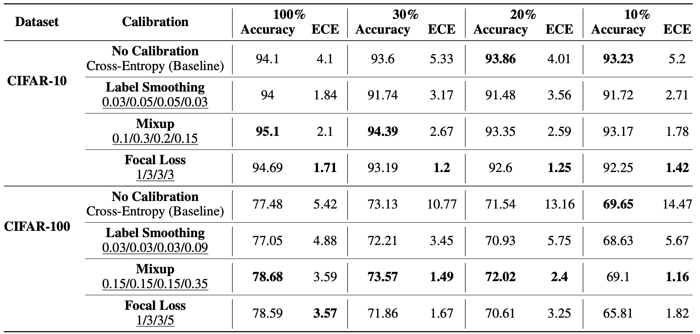 |
Can Calibration Improve Sample Prioritization?
pdf /
abstract /
poster /
code /
bibtex
Calibration can reduce overconfident predictions of deep neural networks, but can calibration also accelerate training? In this paper, we show that it can when used to prioritize some examples for performing subset selection. We study the effect of popular calibration techniques in selecting better subsets of samples during training (also called sample prioritization) and observe that calibration can improve the quality of subsets, reduce the number of examples per epoch (by at least 70%), and can thereby speed up the overall training process. We further study the effect of using calibrated pre-trained models coupled with calibration during training to guide sample prioritization, which again seems to improve the quality of samples selected. @article{tata_hity22,
author = {Tata, Ganesh and Gudur, Gautham Krishna
and Chennupati, Gopinath and
Khan, Mohammad Emtiyaz},
title = {Can Calibration Improve Sample
Prioritization?},
journal = {Has it Trained Yet?
NeurIPS 2022 Workshop},
year = {2022}
}
|
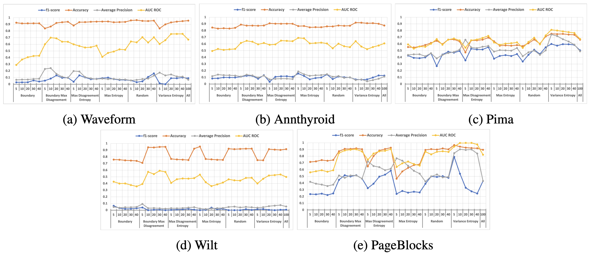 |
Data-Efficient Automatic Model Selection in Unsupervised Anomaly Detection
pdf /
abstract /
slides /
bibtex
Anomaly Detection is a widely used technique in machine learning that identifies context-specific outliers. Most real-world anomaly detection applications are unsupervised, owing to the bottleneck of obtaining labeled data for a given context. In this paper, we solve two important problems pertaining to unsupervised anomaly detection. First, we identify only the most informative subsets of data points and obtain ground truths from the domain expert (oracle); second, we perform efficient model selection using a Bayesian Inference framework and recommend the top-k models to be fine-tuned prior to deployment. To this end, we exploit multiple existing and novel acquisition functions, and successfully demonstrate the effectiveness of the proposed framework using a weighted Ranking Score (\eta) to accurately rank the top-k models. Our empirical results show a significant reduction in data points acquired (with at least 60% reduction) while not compromising on the efficiency of the top-k models chosen, with both uniform and non-uniform priors over models. @inproceedings{gudur_icmla22,
author = {Gudur, Gautham Krishna and Raaghul, R
and Adithya, K and Vasudevan, Shrihari},
title = {Data-Efficient Automatic Model
Selection in Unsupervised Anomaly Detection},
booktitle = {IEEE ICMLA 2022},
year = {2022}
}
|
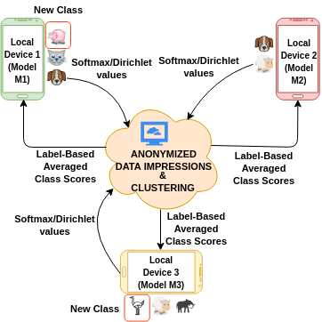 |
Zero-Shot Federated Learning with New Classes for Audio Classification
pdf /
abstract /
poster /
video /
slides /
bibtex
Federated learning is an effective way of extracting insights from different user devices while preserving the privacy of users. However, new classes with completely unseen data distributions can stream across any device in a federated learning setting, whose data cannot be accessed by the global server or other users. To this end, we propose a unified zero-shot framework to handle these aforementioned challenges during federated learning. We simulate two scenarios here – 1) when the new class labels are not reported by the user, the traditional FL setting is used; 2) when new class labels are reported by the user, we synthesize Anonymized Data Impressions by calculating class similarity matrices corresponding to each device’s new classes followed by unsupervised clustering to distinguish between new classes across different users. Moreover, our proposed framework can also handle statistical heterogeneities in both labels and models across the participating users. We empirically evaluate our framework on-device across different communication rounds (FL iterations) with new classes in both local and global updates, along with heterogeneous labels and models, on two widely used audio classification applications – keyword spotting and urban sound classification, and observe an average deterministic accuracy increase of ∼4.041% and ∼4.258% respectively. @inproceedings{gudur_interspeech21,
author = {Gudur, Gautham Krishna and
Perepu, Satheesh Kumar},
title = {Zero-Shot Federated Learning with
New Classes for Audio Classification},
booktitle = {Proc. Interspeech 2021},
pages = {1579--1583},
year = {2021},
doi = {10.21437/Interspeech.2021-2264}
}
|
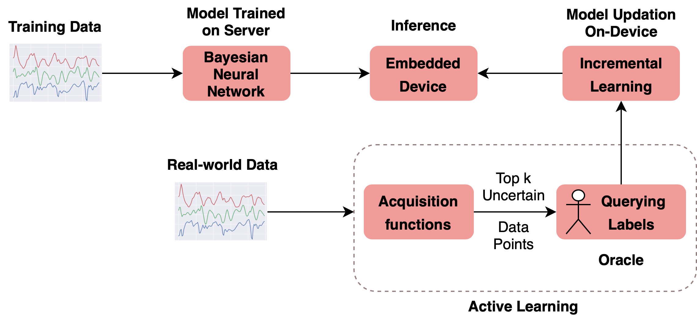 |
Bayesian Active Learning for Wearable Stress and Affect Detection
pdf /
abstract /
poster /
bibtex
In the recent past, psychological stress has been increasingly observed in humans, and early detection is crucial to prevent health risks. Stress detection using ondevice deep learning algorithms has been on the rise owing to advancements in pervasive computing. However, an important challenge that needs to be addressed is handling unlabeled data in real-time via suitable ground truthing techniques (like Active Learning), which should help establish affective states (labels) while also selecting only the most informative data points to query from an oracle. In this paper, we propose a framework with capabilities to represent model uncertainties through approximations in Bayesian Neural Networks using Monte-Carlo (MC) Dropout. This is combined with suitable acquisition functions for active learning. Empirical results on a popular stress and affect detection dataset experimented on a Raspberry Pi 2 indicate that our proposed framework achieves a considerable efficiency boost during inference, with a substantially low number of acquired pool points during active learning across various acquisition functions. Variation Ratios achieves an accuracy of 90.38% which is comparable to the maximum test accuracy achieved while training on about 40% lesser data. @article{ragav_mlmh20,
author = {Ragav, Abhijith and
Gudur, Gautham Krishna},
title = {Bayesian Active Learning for
Wearable Stress and Affect Detection},
journal = {arXiv preprint arXiv:2012.02702},
year = {2020}
}
|
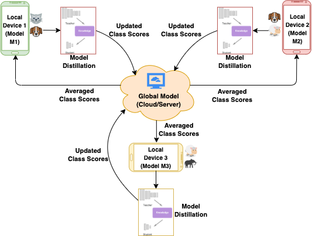 |
Resource-Constrained Federated Learning with Heterogeneous Labels and Models for Human Activity Recognition
pdf /
abstract /
poster /
slides /
bibtex
One of the most significant applications in pervasive computing for modeling user behavior is Human Activity Recognition (HAR). Such applications necessitate us to characterize insights from multiple resource-constrained user devices using machine learning techniques for effective personalized activity monitoring. On-device Federated Learning proves to be an extremely viable option for distributed and collaborative machine learning in such scenarios, and is an active area of research. However, there are a variety of challenges in addressing statistical (non-IID data) and model heterogeneities across users. In addition, in this paper, we explore a new challenge of interest - to handle heterogeneities in labels (activities) across users during federated learning. To this end, we propose a framework with two different versions for federated label-based aggregation, which leverage overlapping information gain across activities - one using Model Distillation Update, and the other using Weighted \alpha$-update. Empirical evaluation on the Heterogeneity Human Activity Recognition (HHAR) dataset (with four activities for effective elucidation of results) indicates an average deterministic accuracy increase of at least ~11.01% with the model distillation update strategy and ~9.16% with the weighted \alpha-update strategy. We demonstrate the on-device capabilities of our proposed framework by using Raspberry Pi 2, a single-board computing platform. @inproceedings{gudur_dlhar20,
author = {Gudur, Gautham Krishna and
Perepu, Satheesh K},
title = {Resource-Constrained Federated Learning
with Heterogeneous Labels and Models for
Human Activity Recognition},
booktitle = {Deep Learning for Human Activity
Recognition},
pages = {55--69},
year = {2021},
publisher={Springer Singapore}
}
@article{gudur_mlmh20,
author = {Gudur, Gautham Krishna and
Perepu, Satheesh K},
title = {Federated Learning with Heterogeneous
Labels and Models for Mobile Activity
Monitoring},
journal = {arXiv preprint arXiv:2012.02539},
year = {2020}
}
|
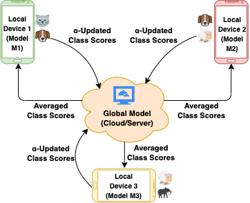 |
Resource-Constrained Federated Learning with Heterogeneous Labels and Models
pdf /
abstract /
slides /
bibtex
Various IoT applications demand resource-constrained machine learning mechanisms for different applications such as pervasive healthcare, activity monitoring, speech recognition, real-time computer vision, etc. This necessitates us to leverage information from multiple devices with few communication overheads. Federated Learning proves to be an extremely viable option for distributed and collaborative machine learning. Particularly, on-device federated learning is an active area of research, however, there are a variety of challenges in addressing statistical (non-IID data) and model heterogeneities. In addition, in this paper we explore a new challenge of interest - to handle label heterogeneities in federated learning. To this end, we propose a framework with simple $\alpha$-weighted federated aggregation of scores which leverages overlapping information gain across labels, while saving bandwidth costs in the process. Empirical evaluation on Animals-10 dataset (with 4 labels for effective elucidation of results) indicates an average deterministic accuracy increase of at least ~16.7%. We also demonstrate the on-device capabilities of our proposed framework by experimenting with federated learning and inference across different iterations on a Raspberry Pi 2, a single-board computing platform. @article{gudur_aiot20,
author = {Gudur, Gautham Krishna and Balaji,
Bala Shyamala and Perepu, Satheesh K},
title = {Resource-Constrained Federated Learning
with Heterogeneous Labels and Models},
journal = {arXiv preprint arXiv:2011.03206},
year = {2020}
}
|
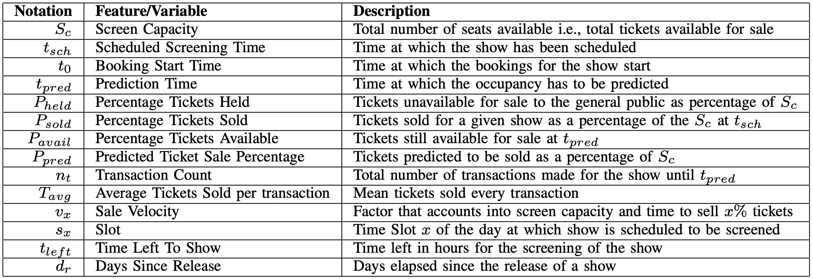 |
A Dynamically Adaptive Movie Occupancy Forecasting System with Feature Optimization
pdf /
abstract /
bibtex
Demand Forecasting is a primary revenue management strategy in any business model, particularly in the highly volatile entertainment/movie industry wherein, inaccurate forecasting may lead to loss in revenue, improper workforce allocation and food wastage or shortage. Predominant challenges in Occupancy Forecasting might involve complexities in modeling external factors – particularly in Indian multiplexes with multilingual movies, high degrees of uncertainty in crowdbehavior, seasonality drifts, influence of socio-economic events and weather conditions. In this paper, we investigate the problem of movie occupancy forecasting, a significant step in the decision making process of movie scheduling and resource management, by leveraging the historical transactions performed in a multiplex consisting of eight screens with an average footfall of over 5500 on holidays and over 3500 on nonholidays every day. To effectively capture crowd behavior and predict the occupancy, we engineer and benchmark behavioral features by structuring recent historical transaction data spanning over five years from one of the top Indian movie multiplex chains, and propose various deep learning and conventional machine learning models. We also propose and optimize on a novel feature called Sale Velocity to incorporate the dynamic crowd behavior in movies. The performance of these models are benchmarked in real-time using Mean Absolute Percentage Error (MAPE), and found to be highly promising while substantially outperforming a domain expert’s predictions. @inproceedings{venkataramani_icdmw19,
author = {Venkataramani, Sundararaman and
Ramesh, Ateendra and S, Sharan Sundar and
Jain, Aashish Kumar and Gudur, Gautham Krishna
and Vijayaraghavan, Vineeth},
title = {A Dynamically Adaptive Movie Occupancy
Forecasting System with Feature Optimization},
booktitle = {International Conference on Data
Mining Workshops (ICDMW)},
pages = {799--805},
year = {2019},
organization = {IEEE}
}
|
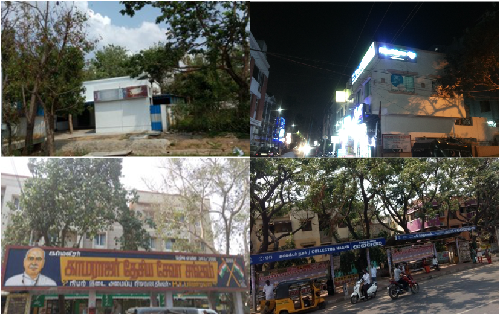 |
A Vision-based Deep On-Device Intelligent Bus Stop Recognition System
pdf /
abstract /
code /
slides /
bibtex
Intelligent public transportation systems are the cornerstone to any smart city, given the advancements made in the field of self-driving autonomous vehicles - particularly for autonomous buses, where it becomes really difficult to systematize a way to identify the arrival of a bus stop on-the-fly for the bus to appropriately halt and notify its passengers. This paper proposes an automatic and intelligent bus stop recognition system built on computer vision techniques, deployed on a low-cost single-board computing platform with minimal human supervision. The on-device recognition engine aims to extract the features of a bus stop and its surrounding environment, which eliminates the need for a conventional Global Positioning System (GPS) look-up, thereby alleviating network latency and accuracy issues. The dataset proposed in this paper consists of images of 11 different bus stops taken at different locations in Chennai, India during day and night. The core engine consists of a convolutional neural network (CNN) of size ~260 kB that is computationally lightweight for training and inference. In order to automatically scale and adapt to the dynamic landscape of bus stops over time, incremental learning (model updation) techniques were explored on-device from real-time incoming data points. Real-time incoming streams of images are unlabeled, hence suitable ground truthing strategies (like Active Learning), should help establish labels on-the-fly. Light-weight Bayesian Active Learning strategies using Bayesian Neural Networks using dropout (capable of representing model uncertainties) enable selection of the most informative images to query from an oracle. Intelligent rendering of the inference module by iteratively looking for better images on either sides of the bus stop environment propels the system towards human-like behavior. The proposed work can be integrated seamlessly into the widespread existing vision-based self-driving autonomous vehicles. @inproceedings{gudur_purba19,
author = {Gudur, Gautham Krishna and Ramesh,
Ateendra and R, Srinivasan},
title = {A Vision-Based Deep On-Device
Intelligent Bus Stop Recognition System},
booktitle = {Adjunct Proceedings of the 2019
ACM International Joint Conference on Pervasive
and Ubiquitous Computing and Proceedings of the
2019 ACM International Symposium on Wearable
Computers},
pages = {963--968},
numpages = {6},
year = {2019}
}
|
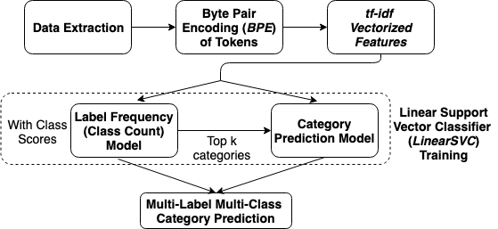 |
Label Frequency Transformation for Multi-Label Multi-Class Text Classification
pdf /
abstract /
poster /
code /
bibtex
In this paper, we (Team Raghavan) describe the system of our submission for GermEval 2019 Task 1 - Subtask (a) and Subtask (b), which are multi-label multi-class classification tasks. The goal is to classify short texts describing German books into one or multiple classes, 8 generic categories for Subtask (a) and 343 specific categories for Subtask (b). Our system comprises of three stages. (a) Transform multi-label multi-class problem into single-label multi-class problem. Build a category model. (b) Build a class count model to predict the number of classes a given input belongs to. (c) Transform single-label problem into multi-label problem back again by selecting the top-k predictions from the category model, with the optimal k value predicted from the class count model. Our approach utilizes a Support Vector Classification model on the extracted vectorized tf-idf features by leveraging the Byte-Pair Token Encoding (BPE), and reaches f1-micro scores of 0.857 in the test evaluation phase and 0.878 in post evaluation phase for Subtask (a), while 0.395 in post evaluation phase for Subtask (b) of the competition. We have provided our solution code in the following link: https://github.com/oneraghavan/germeval-2019. @inproceedings{raghavan_konvens19,
author = {Raghavan, AK and Umaashankar,
Venkatesh and Gudur, Gautham Krishna},
title = {Label Frequency Transformation for
Multi-Label Multi-Class Text Classification},
booktitle = {Proceedings of the 15th Conference
on Natural Language Processing (KONVENS 2019)},
pages = {341--346},
year = {2019},
}
|
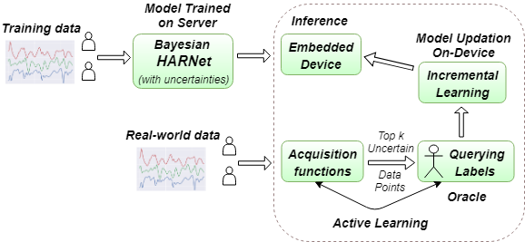 |
ActiveHARNet: Towards On-Device Deep Bayesian Active Learning for Human Activity Recognition
pdf /
abstract /
code /
video /
slides /
bibtex
Various health-care applications such as assisted living, fall detection etc., require modeling of user behavior through Human Activity Recognition (HAR). HAR using mobile- and wearable-based deep learning algorithms have been on the rise owing to the advancements in pervasive computing. However, there are two other challenges that need to be addressed: first, the deep learning model should support on-device incremental training (model updation) from real-time incoming data points to learn user behavior over time, while also being resource-friendly; second, a suitable ground truthing technique (like Active Learning) should help establish labels on-the-fly while also selecting only the most informative data points to query from an oracle. Hence, in this paper, we propose ActiveHARNet, a resource-efficient deep ensembled model which supports on-device Incremental Learning and inference, with capabilities to represent model uncertainties through approximations in Bayesian Neural Networks using dropout. This is combined with suitable acquisition functions for active learning. Empirical results on two publicly available wrist-worn HAR and fall detection datasets indicate that ActiveHARNet achieves considerable efficiency boost during inference across different users, with a substantially low number of acquired pool points (at least 60% reduction) during incremental learning on both datasets experimented with various acquisition functions, thus demonstrating deployment and Incremental Learning feasibility. @inproceedings{gudur_emdl19,
author = {Gudur, Gautham Krishna and
Sundaramoorthy, Prahalathan and
Umaashankar, Venkatesh},
title = {ActiveHARNet: Towards On-Device
Deep Bayesian Active Learning for Human
Activity Recognition},
booktitle = {The 3rd International Workshop
on Deep Learning for Mobile Systems and
Applications},
pages = {7--12},
numpages = {6},
year = {2019}
}
|
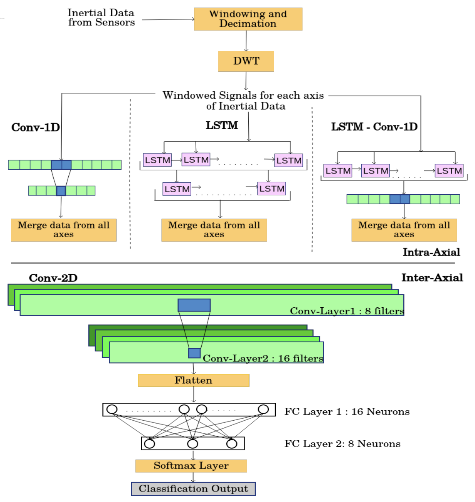 |
HARNet: Towards On-Device Incremental Learning using Deep Ensembles on Constrained Devices
pdf /
abstract /
code /
slides /
bibtex
Recent advancements in the domain of pervasive computing have seen the incorporation of sensor-based Deep Learning algorithms in Human Activity Recognition (HAR). Contemporary Deep Learning models are engineered to alleviate the difficulties posed by conventional Machine Learning algorithms which require extensive domain knowledge to obtain heuristic hand-crafted features. Upon training and deployment of these Deep Learning models on ubiquitous mobile/embedded devices, it must be ensured that the model adheres to their computation and memory limitations, in addition to addressing the various mobile- and user-based heterogeneities prevalent in actuality. To handle this, we propose HARNet - a resource-efficient and computationally viable network to enable on-line Incremental Learning and User Adaptability as a mitigation technique for anomalous user behavior in HAR. Heterogeneity Activity Recognition Dataset was used to evaluate HARNet and other proposed variants by utilizing acceleration data acquired from diverse mobile platforms across three different modes from a practical application perspective. We perform Decimation as a Down-sampling technique for generalizing sampling frequencies across mobile devices, and Discrete Wavelet Transform for preserving information across frequency and time. Systematic evaluation of HARNet on User Adaptability yields an increase in accuracy by ~35% by leveraging the model's capability to extract discriminative features across activities in heterogeneous environments. @inproceedings{sundaramoorthy_emdl18,
author = {Sundaramoorthy, Prahalathan and
Gudur, Gautham Krishna and Moorthy,
Manav Rajiv and Bhandari, R Nidhi and
Vijayaraghavan, Vineeth},
title = {HARNet: Towards On-Device
Incremental Learning Using Deep Ensembles
on Constrained Devices},
booktitle = {Proceedings of the 2nd International
Workshop on Embedded and Mobile Deep Learning},
pages = {31--36},
numpages = {6}
year = {2018}
}
|
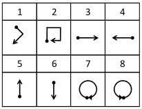 |
A Generic Multi-modal Dynamic Gesture Recognition System using Machine Learning
pdf /
abstract /
code /
slides /
bibtex
Human computer interaction facilitates intelligent communication between humans and computers, in which gesture recognition plays a prominent role. This paper proposes a machine learning system to identify dynamic gestures using triaxial acceleration data acquired from two public datasets. These datasets, uWave and Sony, were acquired using accelerometers embedded in Wii remotes and smartwatches, respectively. A dynamic gesture signed by the user is characterized by a generic set of features extracted across time and frequency domains. The system was analyzed from an end-user perspective and was modelled to operate in three modes. The modes of operation determine the subsets of data to be used for training and testing the system. From an initial set of seven classifiers, three were chosen to evaluate each dataset across all modes rendering the system towards mode-neutrality and dataset-independence. The proposed system is able to classify gestures performed at varying speeds with minimum preprocessing, making it computationally efficient. Moreover, this system was found to run on a low-cost embedded platform – Raspberry Pi Zero (USD 5), making it economically viable. @inproceedings{krishna_ficc18,
author = {Krishna, G Gautham and Nathan,
Karthik Subramanian and Kumar, B Yogesh
and Prabhu, Ankith A and Kannan, Ajay and
Vijayaraghavan, Vineeth},
title = {A Generic Multi-modal Dynamic Gesture
Recognition System Using Machine Learning},
booktitle = {Future of Information and
Communication Conference},
pages = {603--615},
year = {2018},
organization = {Springer}
}
|
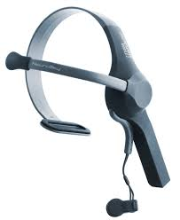 |
Electroencephalography Based Analysis of Emotions Among Indian Film Viewers
pdf /
abstract /
slides /
bibtex
The film industry has been a major factor in the rapid growth of the Indian entertainment industry. While watching a film, the viewers undergo an experience that evolves over time, thereby grabbing their attention. This triggers a sequence of processes which is perceptual, cognitive and emotional. Neurocinematics is an emerging field of research, that measures the cognitive responses of a film viewer. Neurocinematic studies, till date, have been performed using functional magnetic resonance imaging (fMRI); however recent studies have suggested the use of advancements in electroencephalography (EEG) in neurocinematics to address the issues involved with fMRI. In this article the emotions corresponding to two different genres of Indian films are captured with the real-time brainwaves of viewers using EEG and analyzed using R language. @inproceedings{krishna_icaicr17,
author={G, Gautham Krishna and Krishna, G and
Bhalaji, N},
title = {Electroencephalography Based Analysis
of Emotions Among Indian Film Viewers},
booktitle = {International Conference on Advanced
Informatics for Computing Research},
pages = {145--155},
year = {2017},
organization = {Springer}
}
|
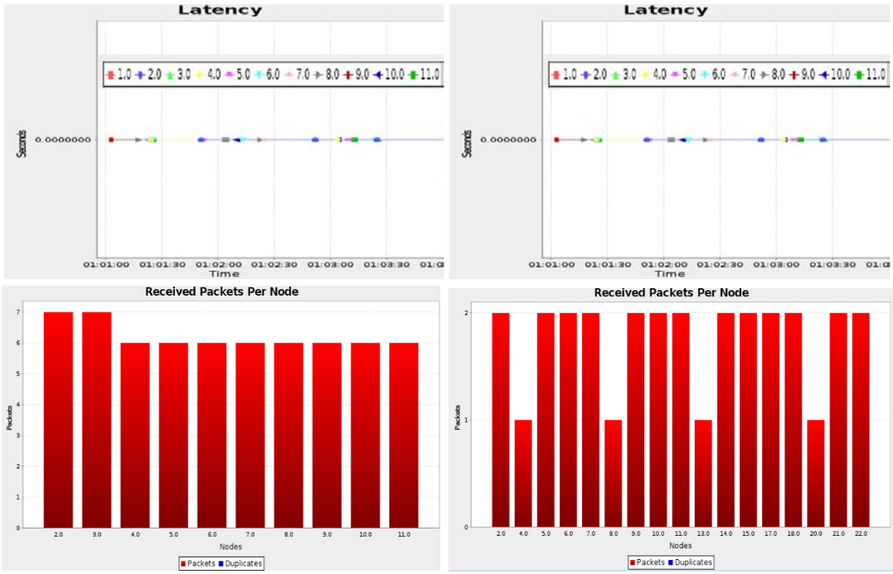 |
Analysis of Routing Protocol for Low-power & Lossy Networks in IoT Real Time Applications
pdf /
abstract /
bibtex
The wide-scaled sensing by Wireless Sensor Networks (WSN) has impacted several areas in the modern generation. It has offered the ability to measure, observe and understand the various physical factors from our environment. The rapid increase of WSN devices in an actuating-communicating network has led to the evolution of Internet of Things (IoT), where information is shared seamlessly across platforms by blending the sensors and actuators with our environment. These low cost WSN devices provide automation in medical and environmental monitoring. Evaluating the performance of these sensors using RPL enhances their use in real world applications. The realization of these RPL performances from different nodes focuses our study to utilize WSNs in our day-to-day applications. The effective sensor nodes (motes) for the appropriate environmental scenarios are analyzed, and we propose a collective view of the metrics for the same, for enhanced throughput in the given field of usage. @article{krishna_icrtcse16,
author = {Krishna, G Gautham and Krishna, G
and Bhalaji, N},
title = {Analysis of Routing Protocol
for Low-power and Lossy Networks in IoT
Real Time Applications},
journal = {Procedia Computer Science},
volume = {87},
pages = {270--274},
year = {2016},
publisher={Elsevier}
}
|
|
Heterogeneous Zero-Shot Federated Learning with New Classes for On-Device Audio Classification |
|
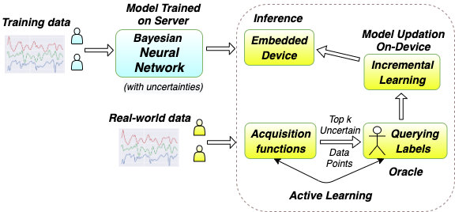 |
Bayesian Active Learning for Wearable and Mobile Health |
|
Handling Real-time Unlabeled Data in Activity Recognition using Deep Bayesian Active Learning and Data Programming |
|
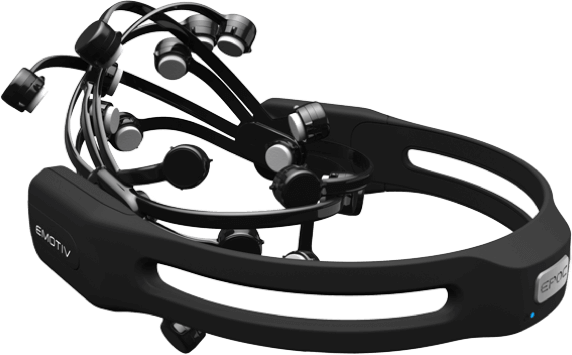 |
Neurocinematics: The Intelligent Review System |
|
|
EEML 2020, OxML 2020, EEML 2021, and the IIIT-H Summer School on AI 2022, with poster presentations at both EEML editions. show details
Coursework: Generative Models in Machine Learning, Advanced Computer Vision, Statistical Methods I & II, Ethics of AI, Applied Machine Learning, Fine-Tuning LLMs, AI in Health, Spoken Language Technologies, Human Signals